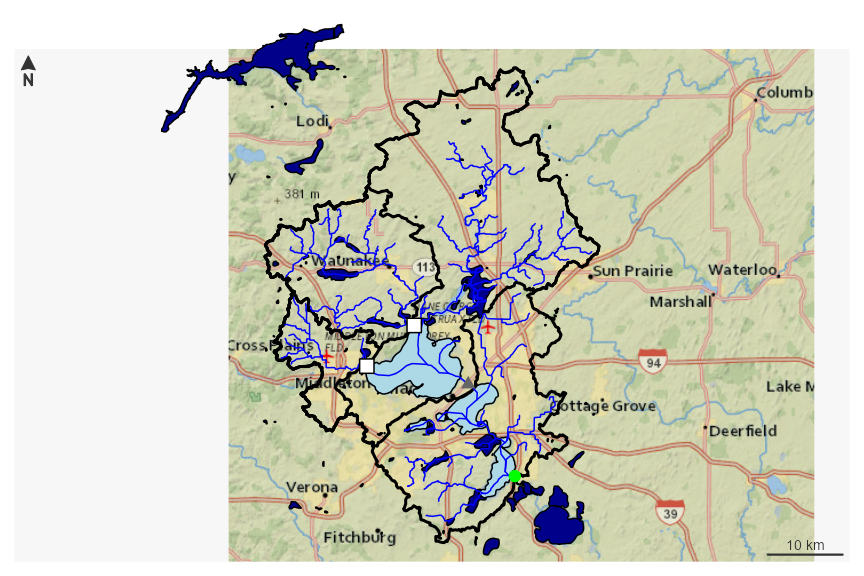

Plotting with nhdplusTools
The goal of this vignette is to demonstrate a simple and lightweight approach to building maps with NHDPlus data.
The plot_nhdplus function
plot_nhdplus is a work in progress. Not all inputs in the function have been implemented as of 11/18/2019 and additional functionality will be added later. Please leave feature requests and issues you find in an issue here.
plot_nhdplus is a function that makes getting a simple plot of NHDPlus data as easy as possible. It works with other functions from nhdplusTools for identifying and retrieving watershed outlet locations. See the plot_nhdplus documentation for more info.
If we pass plot_nhdplus a single NWIS site id, nhdplusTools uses web services to get data and we get a plot like this:

If we want to add other watersheds, we can use any outlet available from the Network Linked Data Index. See “nldi” functions elsewhere in nhdplusTools.


If we don’t know a site id, we can just pass in one or more latitude / longitude locations.
start_point <- sf::st_as_sf(data.frame(x = -89.36, y = 43.09),
coords = c("x", "y"), crs = 4326)
plot_nhdplus(start_point)
plot_nhdplus also allows modification of streamorder (if you have data available locally) and styles. This plot request shows how to get a subset of data for a plot and the range of options. See documentation for more details.
sample_data <- system.file("extdata/sample_natseamless.gpkg", package = "nhdplusTools")
plot_nhdplus(list(list("comid", "13293970"),
list("nwissite", "USGS-05428500"),
list("huc12pp", "070900020603"),
list("huc12pp", "070900020602")),
streamorder = 2,
nhdplus_data = sample_data,
plot_config = list(basin = list(lwd = 2),
outlets = list(huc12pp = list(cex = 1.5),
comid = list(col = "green"))),
stoponlargerequest = FALSE)
We can also plot NHDPlus data without an outlet at all.
bbox <- sf::st_bbox(c(xmin = -89.56684, ymin = 42.99816, xmax = -89.24681, ymax = 43.17192),
crs = "+proj=longlat +datum=WGS84 +no_defs")
plot_nhdplus(bbox = bbox)
Getting Data
What follows shows how to use nhdplusTools to create plots without the plot_nhdplus function. While super convenient, we all know the “easy button” is never quite right, the description below should help get you started.
For this example, we’ll start from an outlet NWIS Site. Note that other options are possible with discover_nhdplus_id and discover_nldi_sources.
library(sf)
#> Linking to GEOS 3.7.2, GDAL 2.4.1, PROJ 5.2.0
library(nhdplusTools)
nwissite <- list(featureSource = "nwissite",
featureID = "USGS-05428500")
flowline <- navigate_nldi(nwissite,
mode = "upstreamTributaries",
data_source = "")
nhdplus <- subset_nhdplus(comids = flowline$nhdplus_comid,
output_file = file.path(temp_dir, "nhdplus.gpkg"),
nhdplus_data = "download",
overwrite = TRUE, return_data = FALSE)
#> All intersections performed in latitude/longitude.
#> Reading NHDFlowline_Network
#> Writing NHDFlowline_Network
#> Reading CatchmentSP
#> Writing CatchmentSP
flowline <- read_sf(nhdplus, "NHDFlowline_Network")
upstream_nwis <- navigate_nldi(nwissite,
mode = "upstreamTributaries",
data_source = "nwissite")
basin <- get_nldi_basin(nwissite)Now we have a file at the path held in the variable nhdplus and three sf data.frames with contents that look like:
st_layers(nhdplus)
#> Driver: GPKG
#> Available layers:
#> layer_name geometry_type features fields
#> 1 NHDFlowline_Network 3D Multi Line String 168 91
#> 2 CatchmentSP Multi Polygon 167 8
#> 3 NHDArea Multi Polygon 1 16
#> 4 NHDWaterbody Multi Polygon 90 23
names(flowline)
#> [1] "id" "ogc_fid" "comid" "fdate" "resolution"
#> [6] "gnis_id" "gnis_name" "lengthkm" "reachcode" "flowdir"
#> [11] "wbareacomi" "ftype" "fcode" "streamleve" "streamorde"
#> [16] "streamcalc" "fromnode" "tonode" "hydroseq" "levelpathi"
#> [21] "pathlength" "terminalpa" "arbolatesu" "divergence" "startflag"
#> [26] "terminalfl" "dnlevel" "uplevelpat" "uphydroseq" "dnlevelpat"
#> [31] "dnminorhyd" "dndraincou" "dnhydroseq" "frommeas" "tomeas"
#> [36] "rtndiv" "vpuin" "vpuout" "areasqkm" "totdasqkm"
#> [41] "divdasqkm" "hwnodesqkm" "maxelevraw" "minelevraw" "maxelevsmo"
#> [46] "minelevsmo" "slope" "elevfixed" "hwtype" "slopelenkm"
#> [51] "q0001a" "v0001a" "qincr0001a" "q0001b" "v0001b"
#> [56] "qincr0001b" "q0001c" "v0001c" "qincr0001c" "q0001d"
#> [61] "v0001d" "qincr0001d" "q0001e" "v0001e" "qincr0001e"
#> [66] "q0001f" "qincr0001f" "arq0001nav" "temp0001" "ppt0001"
#> [71] "pet0001" "qloss0001" "qg0001adj" "qg0001nav" "lat"
#> [76] "gageadj" "avgqadj" "smgageid" "smgageq" "etfract1"
#> [81] "etfract2" "a" "b" "bcf" "r2"
#> [86] "ser" "nref" "gageseqp" "gageseq" "shape_length"
#> [91] "rpuid" "geom"
names(upstream_nwis)
#> [1] "source" "sourceName" "identifier" "name" "uri"
#> [6] "comid" "navigation" "geometry"
names(basin)
#> [1] "geometry"
class(st_geometry(flowline))
#> [1] "sfc_MULTILINESTRING" "sfc"
class(st_geometry(upstream_nwis))
#> [1] "sfc_POINT" "sfc"
class(st_geometry(basin))
#> [1] "sfc_POLYGON" "sfc"Our file has four layers: network flowlines, simplified catchments, nhd area features, and nhd waterbody features.
The flowlines have a large set of attributes from the NHDPlus dataset. And the nwis sites have a few attributes that came from the NLDI. Attributes for NWIS sites can be found using the dataRetrieval package.
See the NHDPlus user guide linked here for more on what these layers are and what the flowline attributes entail.
Bounding Boxes
First, a side note on bounding boxes. With the ongoing transition from the sp package to the sf package, there are a few stumbling blocks. Bounding boxes are one of them. As shown below, the sf bbox format is a named vector of class “bbox”. The sp bbox format is a matrix with named dimensions. Many packages expect the sp format. the ggmap package expects yet another bbox format, much like sf but with different names.
library(sp)
sf_bbox <- st_bbox(basin)
sf_bbox
#> xmin ymin xmax ymax
#> -89.60465 43.03507 -89.20378 43.36607
class(sf_bbox)
#> [1] "bbox"
sp_bbox <- sp::bbox(sf::as_Spatial(basin))
sp_bbox
#> min max
#> x -89.60465 -89.20378
#> y 43.03507 43.36607
class(sp_bbox)
#> [1] "matrix"
# Or without the sp::bbox
sp_bbox <- matrix(sf_bbox,
byrow = FALSE,
ncol = 2,
dimnames = list(c("x", "y"),
c("min", "max")))
sp_bbox
#> min max
#> x -89.60465 -89.20378
#> y 43.03507 43.36607
ggmap_bbox <- setNames(sf_bbox, c("left", "bottom", "right", "top"))
ggmap_bbox
#> left bottom right top
#> -89.60465 43.03507 -89.20378 43.36607Base R Plotting
In order to maximize flexibility and make sure we understand what’s going on with coordinate reference systems, the demonstration below shows how to use base R plotting with the package prettymappr and rosm.
In this example, we have to plot just the geometry, extracted with st_geometry and we need to project the geometry into the plotting coordinate reference system, EPSG:3857 also known as “web mercator”. The reason we have to make this transformation is that practically all basemap tiles are in this projection and reprojection of pre-rendered tiles doesn’t look good. We do this with a simple prep_layer function.
The prettymapr::prettymap() function isn’t strictly necessary, but it gives us nice margins, a scale bar, and a north arrow. The rosm::osm.plot and base plot commands put data onto the R plotting device so the first to be plotted is on the bottom. A couple hints here. lwd is line width. pch is point style. cex is an expansion factor. Colors shown below are basic R colors. the rgb function is handy for creating colors with transparency if that’s of interest.
prep_layer <- function(x) st_geometry(st_transform(x, 3857))
prettymapr::prettymap({
rosm::osm.plot(sp_bbox, type = "cartolight", quiet = TRUE, progress = "none")
plot(prep_layer(basin),
lwd = 2, add = TRUE)
plot(prep_layer(flowline),
lwd = 1.5, col = "deepskyblue", add = TRUE)
plot(prep_layer(dplyr::filter(flowline, streamorde > 2)),
lwd = 3, col = "darkblue", add = TRUE)
us_nwis_layer <- prep_layer(upstream_nwis)
plot(us_nwis_layer,
pch = 17, cex = 1.5, col = "yellow", add = TRUE)
label_pos <- st_coordinates(us_nwis_layer)
text(label_pos[,1],label_pos[,2],
upstream_nwis$identifier,
adj = c(-0.2, 0.5), cex = 0.7)
}, drawarrow = TRUE)
#> Zoom: 10
#> Map tiles by Carto, under CC BY 3.0. Data by OpenStreetMap, under ODbL.
#> Audotdetect projection: assuming Google Mercator (epsg 3857)
Plotting with ggplot2
Below is a very similar example using ggmap and ggplot2 geom_sf. Note that ggmap takes case of projections for us, which should either make you happy because it just works or very nervous because it just works.
library(ggmap)
library(ggplot2)
upstream_nwis[c("lon", "lat")] <- sf::st_coordinates(upstream_nwis)
basemap_toner <- get_map(source = "stamen", maptype = "toner",
location = ggmap_bbox, zoom = 11, messaging = FALSE)
basemap_terrain <- get_map(source = "stamen", maptype = "terrain-lines",
location = ggmap_bbox, zoom = 11, messaging = FALSE)
toner_map <- ggmap(basemap_toner)
terrain_map <- ggmap(basemap_terrain)
toner_map
terrain_map + geom_sf(data = basin,
inherit.aes = FALSE,
color = "black", fill = NA) +
geom_sf(data = flowline,
inherit.aes = FALSE,
color = "deepskyblue") +
geom_sf(data = dplyr::filter(flowline, streamorde > 2),
inherit.aes = FALSE,
color = "darkblue") +
geom_sf(data = upstream_nwis, inherit.aes = FALSE, color = "red") +
geom_text(data = upstream_nwis, aes(label = identifier, x = lon, y = lat),
hjust = 0, size=2.5, nudge_x = 0.02, col = "black")
Hopefully these examples give a good head start to plotting NHDPlus data. Please submit questions via github issues for more!! Pull requests on this vignette are more than welcome if you have additions or suggestions.